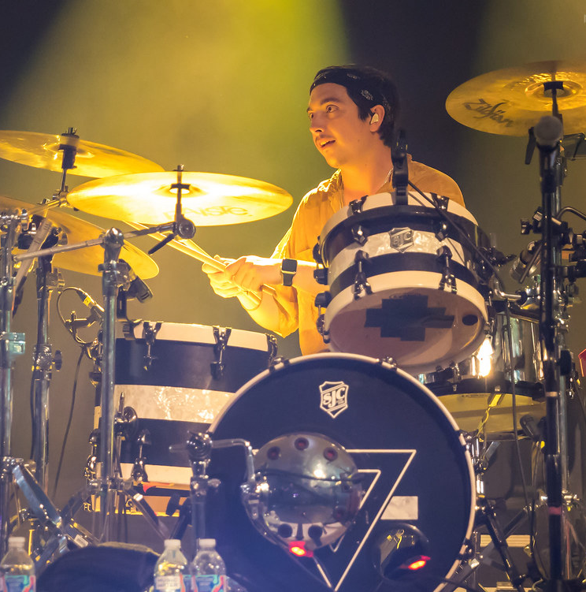
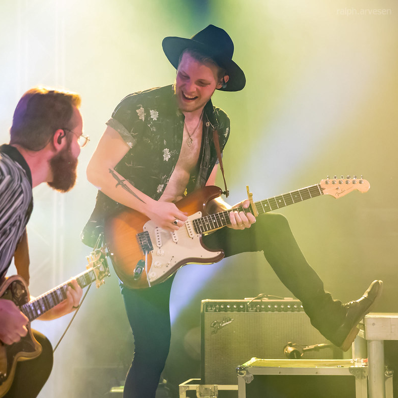
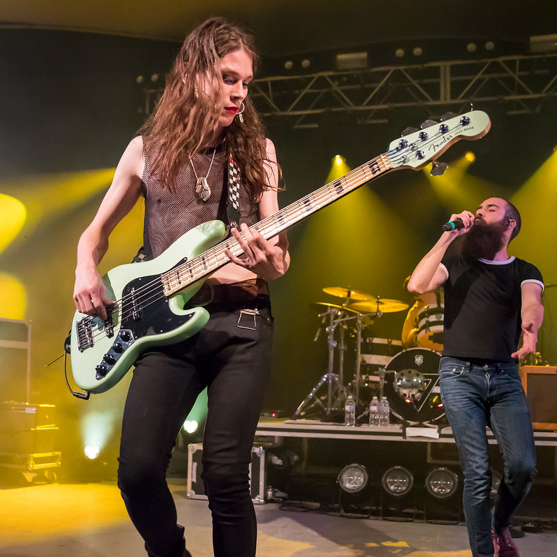
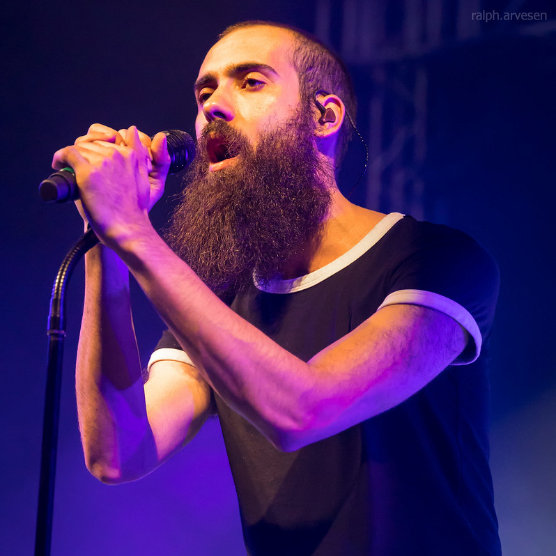

WE ARE RKS
Rainbow Kitten Surprise is an alternative rock indie band, featuring lead vocalist Sam Melo, Darrick “Bozzy” Keller (guitar, backup vocals), Ethan Goodpaster (electric guitar), Jess Haney (drums), and Charlie Holt (bass). Members hail from Boone, North Carolina as well as Robbinsville, North Carolina (Jess Haney and Ethan Goodpaster). The music of Rainbow Kitten Surprise, also known as “RKS,” is known for its harmonies, instrumentation and lyrics, and its sound has been influenced by artists Modest Mouse, Kings of Leon, Frank Ocean and Schoolboy Q.
Jess Haney

Drums.
Ethan Goodpaster

Electric Guitar.
DK
Guitarist and Singer.
Charlie Holt

Bass.
Sam Melo

Lead Singer